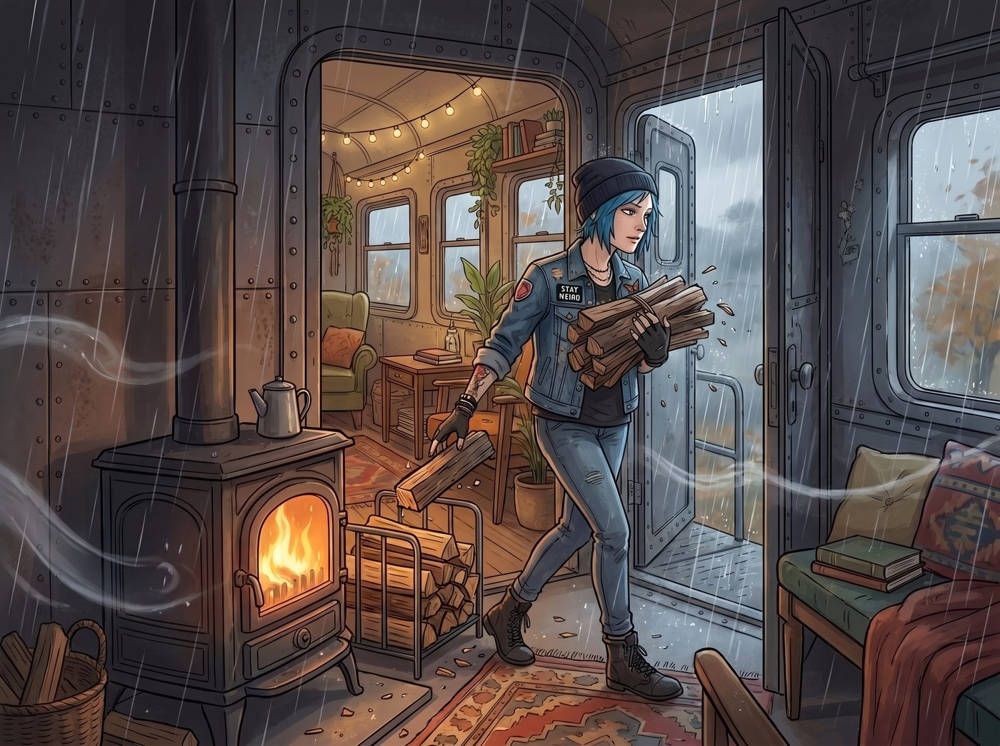
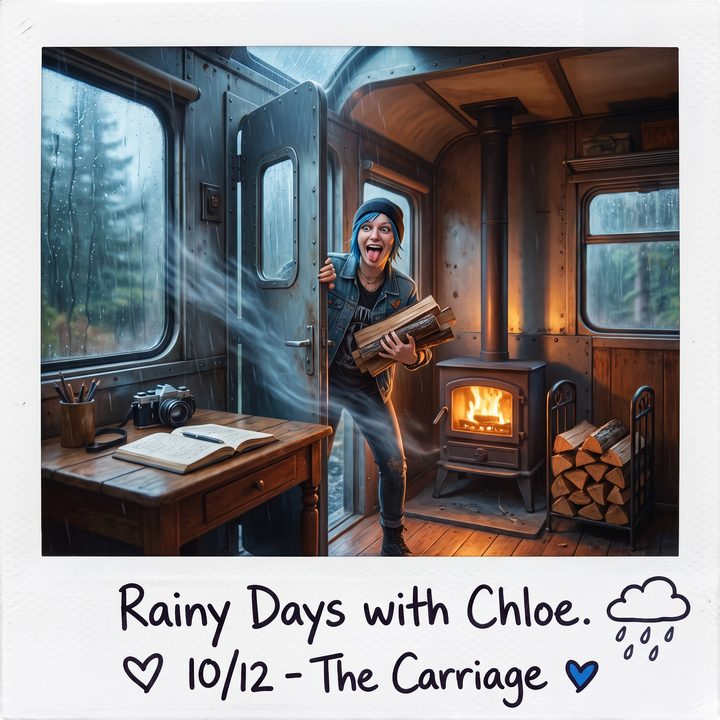
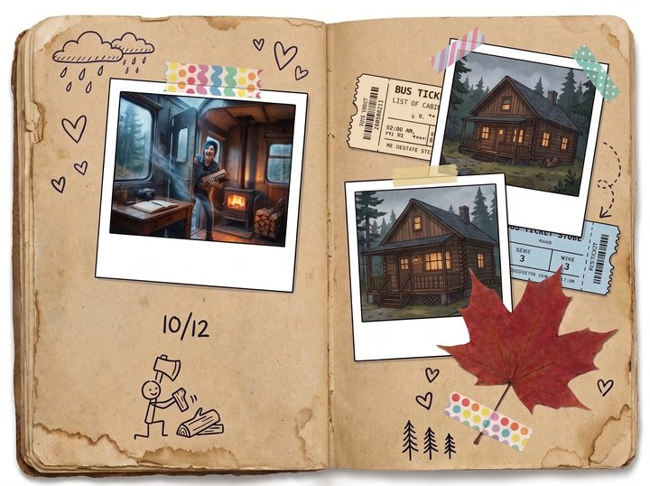

沙沙聲



一、柴
二〇二一年十月，第一場像樣的秋雨下了三天。
Chloe 抱著一大捆剛劈好的木柴推開中節車廂的門，帶進一陣潮濕的冷風。她把木柴往柴火爐旁邊的鐵架上一扔，拍掉手套上的木屑。
「妳又去後面那片林子砍樹了？」Max 從共享書桌那頭抬起頭，「不會惹上麻煩嗎？我記得這邊很多冷杉都很老了。」
「Caulfield，妳把我想成什麼了？半夜開電鋸去盜伐神木的無良伐木工？」Chloe 脫下沾滿松脂的外套，「我劈的全是風倒木，還有幾棵已經死透的赤楊。活的老冷杉，借我十個膽子我也不碰。」她踢了踢那堆木柴，「赤楊燒得快，但幾乎不冒煙，劈起來聲音很脆。冷杉死木太重，拖回來會要我的命。」
Max 笑著拿起拍立得，對準 Chloe 抱著最後一塊木柴、故意擠出來的那張鬼臉，按下了快門。
二、兩本簿子
照片吐出來，Max 甩了兩下，等它顯影，然後翻開她的手帳。
那是一本牛皮紙封面的厚本子，邊角已經被翻得起毛，裡面貼滿了拍立得、紙膠帶、車票根和一片壓乾的楓葉。她用大拇指把一段紙膠帶壓平，把 Chloe 的鬼臉貼上去，再拿代針筆在旁邊寫下日期，畫了一把小斧頭。
書桌另一頭，Lily 剛結束一段長達半小時的鍵盤敲擊。她把筆電螢幕半闔上，從口袋裡掏出那本巴掌大的線圈筆記本，按出原子筆芯，沙沙地寫了幾行。
Max 停下筆，目光在 Lily 那台貼滿開源軟體貼紙的筆電，和那本線圈筆記本之間來回看了幾次。
「我一直想問。」她用筆尾敲了敲下巴，「我寫手帳，是因為我是個無藥可救的底片宅和文青。但妳打字快得像自動化腳本，營地所有的檔案都在妳的雲端硬碟裡。為什麼還要隨身帶一本紙的？」
Lily 停下筆，把筆記本攤平在桌上。
「零秒開機，不用充電，不會因為系統更新當機，陽光直射下也看得清楚。」她推了推眼鏡，「是一台非常可靠的本地備份裝置。」
端著兩盤熱狗從廚房走過來的 Chloe 嗤笑了一聲：「承認吧，妳就是怕哪天 Starlink 斷線，妳的待辦清單跟著一起消失。」
「那只是附帶的好處。」Lily 接過盤子，把筆記本往旁邊挪了挪，免得沾到芥末醬，「紙本真正無可取代的地方，是它的威懾力。」
「威懾力？」Max 挑起眉毛。
Lily 咬了一口熱狗，慢慢嚼完。
「打電話給電力公司的客服，或者當面問那個來抽化糞池的承包商，為什麼遲到了三個小時。」她說，「如果妳拿手機記下他的名字和藉口，他只會覺得妳在滑社群網站。」
她拿起原子筆，在空中輕輕點了兩下。
「但如果妳當著他的面，翻開一本筆記本，讓他聽見筆尖在紙上的沙沙聲，然後問：『可以麻煩您再說一次您的名字，還有剛才答應的時間嗎？』」她停了一下，「他的大腦會自動把這個聲音，跟筆錄、稽查報告和罰單連在一起。」
「然後？」
「然後他下次就不會遲到了。」
Max 張著嘴，低頭看了看自己那本貼滿拍立得、寫滿碎碎念的手帳，忽然覺得它的殺傷力實在低得可憐。
三、化糞池承包商
Chloe 剛把半個熱狗塞進嘴裡，聽到這裡，咀嚼的動作停住了。
她盯著桌上那本安安靜靜的線圈筆記本，慢慢地，把嘴裡的東西嚥了下去。
「等一下。」她說。
Lily 端起馬克杯，喝了一口水。
「上禮拜，」Chloe 的手指開始指向那本筆記本，「我跟妳保證，週五之前一定會把車廂頂那條漏水的縫補好。當時妳就站在我面前，一句話都沒說，只是掏出這本東西，寫了一行字。」
Lily 沒有否認。
「妳不是在記修繕清單。」Chloe 的聲音高了八度，「妳是在對我施法！妳把我當成那個遲到的化糞池承包商？！」
「事實證明，」Lily 平靜地說，「這個方法在營地內部也有效。」
她拿起筆記本，當著 Chloe 的面翻到某一頁，用原子筆在一行字旁邊，乾脆俐落地打了一個勾。
然後「啪」地一聲闔上。
Chloe 張著嘴，轉頭向 Max 求救：「Max，妳聽到了嗎？我在自己家裡被行政監控了！」
Max 沒有回答。
她正低著頭，一頁一頁往回翻自己的手帳。翻到上週二那一頁，她停住了。
那一頁貼著一張拍立得：Chloe 站在梯子上，手裡拿著一管矽利康，對著鏡頭比讚。旁邊是 Max 自己的字跡：
C 說：「週五前一定補好屋頂。」
字的旁邊，畫了一個小小的、半信半疑的哭臉。
再往後翻一頁，週五。同一個角落，貼著另一張拍立得：車廂頂那條縫已經抹平了，Chloe 坐在屋頂上，對著鏡頭翻白眼。旁邊寫著：
補好了。（居然。）
Max 慢慢把手帳轉過來，攤在 Chloe 面前。
Chloe 看了看那個哭臉，又看了看那個「（居然。）」，再抬頭看了看 Max，最後看了看已經若無其事在吃熱狗的 Lily。
「……妳們兩個，」她說，「是串通好的？」
「沒有。」Lily 說。
「沒有。」Max 說，「我只是剛好也想知道妳會不會補。」
Chloe 一屁股坐回沙發上，把整盤熱狗抱在懷裡，像是在抱最後一個站在她這邊的盟友。
「這個營地，」她宣布，「有兩套情報系統。一套用紙膠帶，一套用原子筆。而老娘是唯一的監控對象。」
「不是唯一的。」Lily 說。
Chloe 和 Max 一起轉頭看她。
Lily 翻開筆記本，翻到最前面幾頁，把它轉過來，推到桌子中間。
那一頁的標題是「Victoria 學姐：答應過的事」。下面密密麻麻列了十幾行，最上面那一行寫著：
「下個月一定會學會用洗衣機。」——二〇一八年三月。
旁邊沒有勾。
車廂裡安靜了兩秒。
然後 Chloe 爆出一陣大笑，笑到熱狗差點從盤子上滾下去。Max 舉起拍立得，對著那一頁按下了快門。
「這張，」Max 一邊甩照片一邊說，「我要貼在手帳裡。」
「我會記下來的。」Lily 說，按出了筆芯。